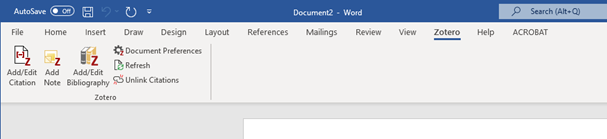
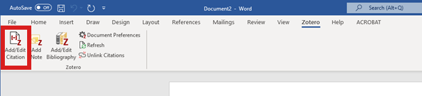
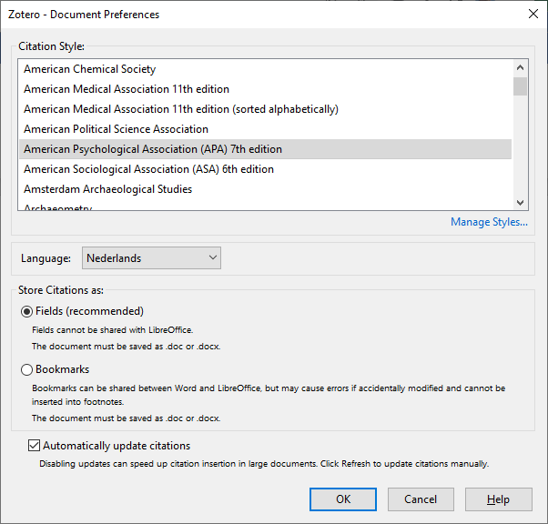
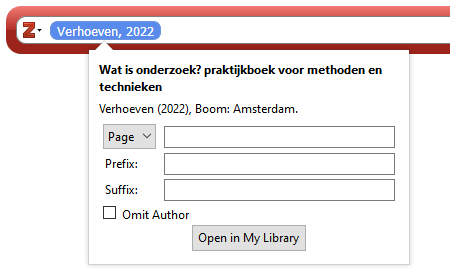
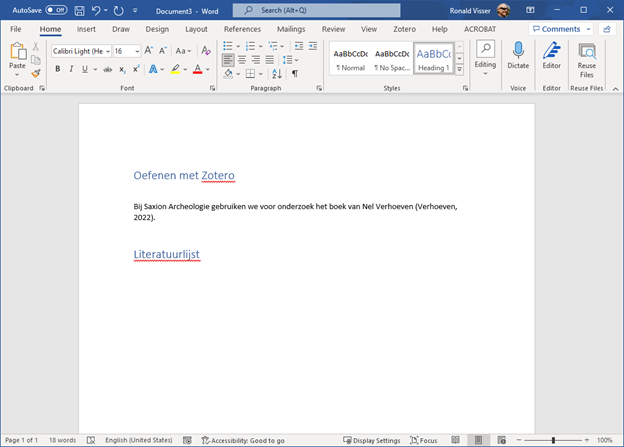
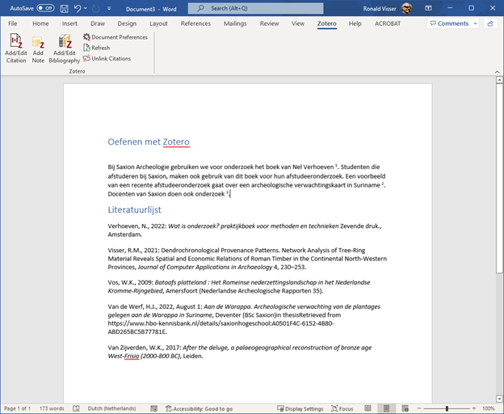
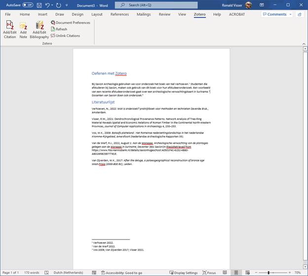
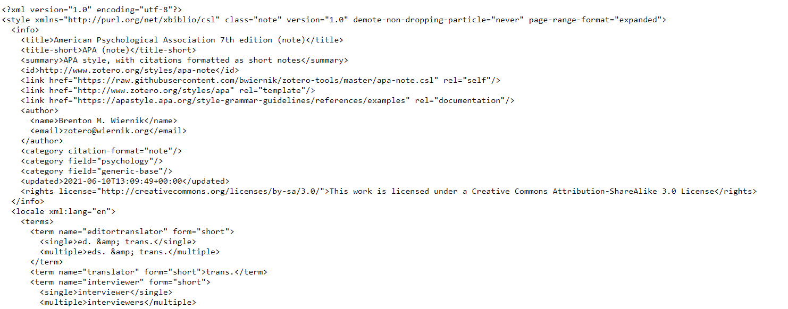

Zotero gebruiken voor bibliografische werkzaamheden: bronvermeldingen en literatuurlijst
![]()
Plugin voor Word
Om automatisch bronvermeldingen in te kunnen voegen, moet je eerst de plugin voor Microsoft Word invoegen. Er bestaan ook vergelijkbare plugins voor LibreOffice (https://nl.libreoffice.org/) en Google Docs (https://www.google.com/docs/about/). Als het goed is zijn deze automatisch geïnstalleerd bij de eerste start van Zotero. Zo niet ga naar https://www.zotero.org/support/word_processor_integration en volg de instructies.
Als de installatie goed gegaan is, zou je bij het openen van Word een nieuw tabblad op het lint moeten kunnen vinden, speciaal voor Zotero (tussen View en Help in):

Invoegen van een verwijzing in Word
Het invoegen van verwijzingen in Word bestaat uit enkele handelingen, maat laten we eerst wat tekst aanmaken. Maak een nieuw Word-document aan en type daarin:
“Bij Saxion Archeologie gebruiken we voor onderzoek het boek van Nel Verhoeven”.
Druk daarna op de knop om een citatie in te voegen.

De eerste keer dat je op deze knop drukt, zal Zotero aan je vragen welke stijl je wilt gebruiken voor het citeren. In november 2022 waren er 10,363 verschillende stijlen beschikbaar (https://www.zotero.org/styles). Er is voor vrijwel ieder wetenschappelijk tijdschrift wel een stijl beschikbaar. De stijlen zijn allemaal open source en worden onderhouden door diverse gebruikers (waaronder ook de auteur van deze les) en beheerders van Zotero via GitHub (https://github.com/zotero/styles-repo). We gebruiken nu even de APA-stijl (7e editie).

De standaardopties zijn meestal prima en die gebruiken we gewoon. Als je naast in Word ook in LibreOffice wilt kunnen werken in hetzelfde document, maak dan gebruik van Bookmarks in plaats van Fields. De instellingen zijn per document, dus in een ander document kun je een nieuwe stijl kiezen.
Als het goed is zie je het onderstaande rood omlijnde balkje:

Als je nu de naam Verhoeven typt, zul je de publicatie van Nel Verhoeven over Onderzoek vinden. Klik daarop en het kader zal er zo uitzien:
Als je nu op de citatie klikt in dit scherm, kun je ook nog aanvullingen doen:

Je kunt bijvoorbeeld naar specifieke pagina’s verwijzen. Dat hoeft nu niet. Dus ga weer in rode kader staan en druk op Enter. Als je nu in Word kijkt, zul je het volgende zien:

Het document is niet netjes opgemaakt. We voegen even een titel toe: “Oefenen met Zotero” en geven die de opmaak van Heading 1. Onder de geschreven tekst voegen we een nieuw kopje in met “Literatuurlijst” en passen ook de opmaak Heading 1 toe.
Als het goed is, ziet het er nu zo uit:

Zorg nu dat je met de cursor onder Literatuurlijst gaat staan. Ga naar het tabblad Zotero op het Ribbon en druk op Add/Edit Bibliography. De volledige verwijzing naar Verhoeven (2022) wordt nu ingevoerd.

We gaan nog een bron invoegen en daarvoor een stukje tekst:
“Studenten die afstuderen bij Saxion, maken ook gebruik van dit boek voor hun afstudeeronderzoek. Een voorbeeld van een recente afstudeeronderzoek gaat over een archeologische verwachtingskaart in Suriname .”
Hier willen we de ingevoerde scriptie over de Warappa-kreek invoegen. Doe dat.

De sortering lijkt wat vreemd, maar Amerikanen sorteren op voorvoegsel van een achternaam en niet op de achternaam zelf.
We voegen nog een klein beetje tekst toe: “Docenten van Saxion doen ook onderzoek”. We gebruiken daarvoor de publicatie van Ronald Visser die jullie al ingevoerd hebben. Daarnaast hebben we nog twee publicaties nodig, deze zijn te vinden op de volgende webpagina’s :
Voeg die toe aan jouw Zotero-bibliotheek en let goed op dat je alle gegevens invoegt. Voeg daarna de verwijzingen toe aan de tekst:

Stijl aanpassen
Dat ziet er al goed uit, maar we willen toch niet werken met APA. We gaan daarom de stijl veranderen in Harvard. Kies Document Preferences in het Zotero-tabblad op het Ribbon.

Kies nu de stijl: “Elsevier – Harvard (with titles)”
Als je nu naar de verwijzingen kijkt, is het meteen aangepast aan deze nieuwe stijl:

Nieuwe stijl installeren
De stijl voor de publicatiewijzer is niet standaard beschikbaar voor Zotero, maar is gemaakt door Ronald Visser. We gaan deze installeren.
Ga in Zotero in de menubalk naar Edit en kies Preferences. Ga dan naar het tabblad Cite

Je kunt nu bestaande stijlen toevoegen. Als je op Get Additional Styles… drukt, krijg je het volgende scherm te zien:

Je kunt nu uit alle bestaande stijlen kiezen en deze direct installeren. De stijl voor de Publicatiewijzer kun je vinden door te zoeken op Publicatiewijzer. Klik erop om deze te installeren en deze al worden toegevoegd aan de stijlen op jouw computer.
Pas nu de stijl in het Word-document aan naar de publicatiewijze.

Je ziet dat de vermeldingen in de tekst nu ineens voetnoten zijn geworden. De positie van het voetnootnummer is echter anders dan bij verwijzingen in de tekst. Het voetnootnummer komt na de punt, in plaats ervoor. Verplaats dus even 3 puntjes en de tekst is nu aangepast aan de nieuwe stijl.

APA, maar dan anders
Bij de opleiding Archeologie maken we gebruik van APA, maar dan in een aangepaste variant. APA maakt gebruik van verwijzingen in de tekst, maar in het archeologisch werkveld is het normaal om gebruik te maken van verwijzingen in voetnoten. Daarom downloaden we een aangepaste stijl voor Zotero: https://raw.githubusercontent.com/bwiernik/zotero-tools/master/apa-note.csl
Als je op de bovenstaande link klikt, kan het zijn dat je nu het onderstaande in de browser ziet:

Je kunt nu op de rechtermuis toets klikken en dan “Save as…” of “Opslaan als…”. Als het goed is wordt je nu gevraagd om het bestand “apa-note.csl” op te slaan. Doe dat.
Ga in Zotero in de menubalk naar Edit en kies Preferences. Ga dan naar het tabblad Cite
Druk nu op het plus symbool naast de tekst “Get additional styles…” Je krijgt nu de vraag om een bestand te selecteren. Kies het bestand dat je net gedownload hebt en de APA-stijl zoals die bij archeologie wordt gebruikt, wordt geïnstalleerd.